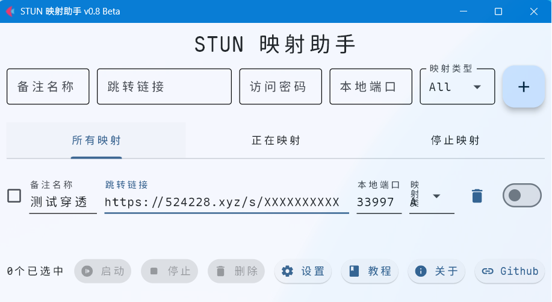

STUN Connects: A Tool for Auto STUN Port Mapping
STUN 映射助手：用于自动重定向连接STUN端口工具
软件介绍
STUN映射助手 是一款针对NAT（网络地址转换）环境设计的工具，它需要配合CFWorkerUrls服务共同将内网的私有服务经过STUN转发绑定到本地。在使用工具前，你需要将（如远程桌面RDP、SSH、私有游戏服务器等）通过Lucky等工具使用STUN绑定到公网，并使用短域名服务配置自动重定向。最后通过短链接服务和STUN 映射助手，它将自动抓取动态公网端口，并绑定到本地的固定端口，让你像访问本地服务一样轻松连接远端的NAT设备。

应用场景
随着运营商逐步回收家庭宽带的公网IPv4地址，传统基于公网IPv4的内网直连方案基本都不能用了，尽管IPv6能解决地址不足问题，但其实际部署仍存在兼容性问题（办公学校等环境还没有支持IPV6），好在现在可以通过STUN协议探测NAT类型、NAT1/UPnP主动开放端口，且无需中转服务器就能访问内网，并结合重定向技术，实现在无公网IPv4且IPv6不完善情况下，直接穿透内网，无需第三方服务器中转
功能亮点
全自动端口重定向
自动识别STUN服务的公网IP和动态端口，无需手动查询或配置。
动态绑定到本地固定端口（如将远端RDP服务的3389端口映射到本地的13389端口）。
支持任意TCP/UDP协议
不限制协议类型，无论是远程桌面（RDP）、SSH、数据库服务，还是游戏服务器（如Minecraft）等，均可穿透。
直接复用本地工具（如远程桌面客户端、Termius等），无需改造适配。
短链接服务整合
通过短域名（如
your.domain.com）自动解析最新公网地址，解决动态IP和端口变化的问题。用户只需记住一个固定域名，工具自动更新后端动态端口，实现“一次配置，长期可用”。
应用场景
远程办公：在外直接连接公司内网的RDP、SSH服务，无需VPN。
私有服务外访：将家庭NAS、智能家居的管理页面暴露到公网，安全可控。
联机游戏：解决P2P游戏NAT严格导致的联机失败问题。
临时测试：快速对外提供测试环境，关闭后自动释放，无残留配置。
技术优势
零依赖：无需公网服务器，仅需一个短域名+STUN服务即可。
低延迟：直接通过STUN建立的P2P通道传输数据，无需中转服务器。
轻量化：占用资源极少，后台静默运行，不干扰其他服务。
软件原理
STUN穿透：获取公网身份
设备启动后，通过内置的STUN服务（如Lucky的STUN服务）与公网服务器通信，获取当前NAT分配的公网IP和端口，相当于给内网服务打上“临时外网门牌号”。
短域名绑定：动态门牌变固定地址
将STUN获取的动态IP和端口，通过API更新到短域名服务（如DDNS服务），生成一个固定域名（如
your.domain.com）。即使公网端口变化，短域名会实时指向最新端口，外部用户始终通过同一个域名访问。
本地端口映射：穿透NAT直达服务
工具持续监听短域名的解析结果，一旦发现公网端口变化，立即将新端口与本地固定端口（如本地的13389端口）绑定。
用户访问本地端口时，流量自动通过STUN通道转发到远端NAT后的服务，实现“本地化”体验。

安装方法
1、Windows / Linux
1.从发行版本下载二进制文件
2.启动StunConnects即可
2、Docker 直接运行
直接启动
使用下列命令启动docker容器
xxxxxxxxxxdocker run -d --network host --name porter-container pikachuim/porter:latest中国用户可以使用
xxxxxxxxxxdocker run -d --network host --name porter-container docker.opkg.us.kg/pikachuim/porter:latest然后您可以通过ip:1680访问您的管理页面，您可能需要放行防火墙
3、Docker Compose
创建一个docker-compose.yml
xxxxxxxxxxversion'3.8' # Docker Compose 版本services porter-container# 定义服务名称 imagepikachuim/porterlatest # 使用的镜像 container_nameporter-container # 容器名称 network_modehost # 使用 Host 网络模式 restartunless-stopped # 重启策略然后启动docker：
xxxxxxxxxxdocker-compose up -d可选参数
隐藏窗口
不会显示窗口，静默启动程序
xxxxxxxxxxStunConnects.exe --hide-window服务模式
非交互式启动，无头服务器用
xxxxxxxxxxStunConnects.exe --flag-server使用方法
确认NAT类
如果是NAT1，打开防火墙就可以穿透
如果是NAT2，需要打开UPNP和防火墙
如果是NAT3，需要打开UPNP和防火墙
如果是NAT4，不用尝试了，肯定不行
申请链接
申请地址：https://1web.us.kg/，『目标地址』需要随便填写一个

保存内容
链接/s/后面的AABBCCDD是suffix网站后缀
更新密码要保存好，只会显示一次，无法恢复
设置Lucky
安装Lucky，教程：https://lucky666.cn/docs/install
打开Lucky——STUN穿透设置——新增设置本地地址端口：

STUN穿透设置——启用Webhook，设置Webhook 更新地址：

请求地址：
https://1web.us.kg/p/请求类型：
POST请求内容：
xxxxxxxxxx{"suffix": "网站后缀","tokens": "更新密码","typing": "http","ipaddr": "{ip}","porter": "{port}"}
测试Lucky
保存之后，等待STUN穿透和更新URL地址
如果能正常打开则穿透已经成功！！！！

设置Ports（可选）
StunConnects说明
正常情况上面的步骤就可以使用了 但是STUN穿透的地址是动态变化的 并且URL重定向只支持Web协议穿透 StunConnects就是解决这个问题的 ①固定本地端口 ②支持非WEB协议
StunConnects使用
打开StunConnects（桌面APP）或者IP:1680（Docker）
新增连接映射：
映射备注：您自己设置一个名称 跳转链接：上一步成功的短链接 本地端口：监听本地端口，不填则随机生成

复制本地或者云端地址，在浏览器或软件进行测试